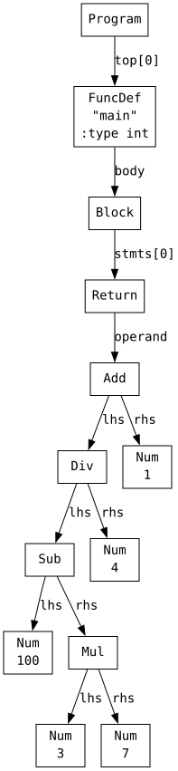
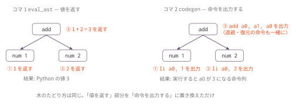
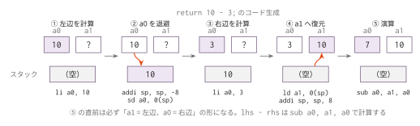

コマ2: 算術式コード生成
今日のゴール
整数リテラルと算術演算を RV64 アセンブリに変換する。
コマ1では、AST を直接評価して Python の整数値を返した。 この回では、AST を評価する代わりに、同じ計算を行う RV64 アセンブリを出力する。
codegen(node) の約束は次の通り。
nodeが表す式を計算し、その結果が実行時にa0レジスタに入るようなアセンブリを出力する。
たとえば、return 1 + 2 * 3; をコンパイルし、生成されたプログラムを実行すると、終了コードが 7 になることを目指す。
この回で扱う範囲
対象にするプログラムは、次の形に限定する。
int main() {
return 式;
}扱う式は以下の通り。
| 種類 | 例 |
|---|---|
| 整数リテラル | 42 |
| 単項マイナス | -3 |
| 足し算 | 1 + 2 |
| 引き算 | 10 - 3 |
| 掛け算 | 2 * 3 |
| 割り算 | 10 / 2 |
| 剰余 | 10 % 3 |
| カッコ | (1 + 2) * 3 |
変数、代入、if、while、関数呼び出しはまだ扱わない。
この回までの言語仕様（EBNF）
この回までに書けるプログラムの文法を、累積の形でまとめる。
記法と最終形の全体像は
language_spec.md の「形式文法（EBNF）」を参照。
program ::= func_def /* ユーザー定義関数はコマ6 */
func_def ::= 'int' 'main' '(' ')' func_body /* 一般の関数定義はコマ6 */
func_body ::= '{' { stmt } '}'
stmt ::= 'return' expr ';'
expr ::= binary_expr /* 代入はコマ3、条件はコマ4 */
binary_expr ::= unary_expr { bin_op unary_expr }
bin_op ::= '*' | '/' | '%' /* 優先順位・結合は下の表。関係・等値はコマ4、論理はコマ13 */
| '+' | '-'
unary_expr ::= primary_expr
| '-' unary_expr
primary_expr ::= INT_LITERAL
| '(' expr ')'この回までの二項演算子の優先順位（高い順）:
| 優先順位 | 演算子 | 結合 |
|---|---|---|
| 1（高） | * / % |
左 |
| 2 | + - |
左 |
表の読み方はコマ1の「木の形は規則で決まっている」と
language_spec.md の「演算子」を参照。
字句トークン（INT_LITERAL など）の定義はどの回でも同じであるため、ここでは繰り返さない。
language_spec.md の「字句トークン」を参照。
AST を確認する
コマ1と同じように、まず Parser が返す AST を確認する。
python3 scaffold/parse_viewer.py sessions/02_arithmetic_codegen/tests/complex.cこのプログラムの内容は次の通り。
int main() {
return (100 - 3 * 7) / 4 + 1;
}実行すると、次のようなS式が表示される。
(program
(funcdef "main" :type int (params)
(block
(return
(add
(div
(sub (num 100)
(mul (num 3) (num 7)))
(num 4))
(num 1))))))
この式は、元のCコードでは次の形である。
return (100 - 3 * 7) / 4 + 1;Parser は演算子の優先順位とカッコを処理し、次のような構造のASTを返している。
(add
(div
(sub (num 100)
(mul (num 3) (num 7)))
(num 4))
(num 1))codegen() は、この木を再帰的にたどりながら、各ノードに対応するアセンブリを出力する。
コマ1との違い
コマ1の eval_ast() は、計算結果を Python の値として返していた。
eval_ast(node) -> 整数値コマ2の codegen() は、計算結果を直接返さない。
代わりに、計算を行うアセンブリを出力する。
codegen(node) -> アセンブリを出力するただし、再帰的にASTをたどる考え方は同じである。
| コマ1 | コマ2 |
|---|---|
ND_NUM を見たら数値を返す |
ND_NUM を見たら li を出力する |
ND_ADD なら左右を評価して足す |
ND_ADD なら左右を計算する命令列を出力して add する |
| 結果は Python の戻り値 | 結果は実行時の a0 レジスタ |

木のたどり方はコマ1と同じで、「値を返す」部分が「命令を出力する」に置き換わる。
使うRV64命令
この回で使う主な命令は以下である。
| 命令 | 意味 |
|---|---|
li a0, N |
即値 N を a0 に入れる |
neg a0, a0 |
a0 の符号を反転する |
add a0, a1, a0 |
a1 + a0 を a0 に入れる |
sub a0, a1, a0 |
a1 - a0 を a0 に入れる |
mul a0, a1, a0 |
a1 * a0 を a0 に入れる |
div a0, a1, a0 |
a1 / a0 を a0 に入れる |
rem a0, a1, a0 |
a1 % a0 を a0 に入れる |
addi sp, sp, -8 |
スタックを8バイト分確保する |
sd a0, 0(sp) |
a0 の値をスタックに保存する |
ld a1, 0(sp) |
スタックから値を読み、a1 に入れる |
addi sp, sp, 8 |
確保したスタックを戻す |
codegen の基本方針
Codegen02 クラスの codegen(node) は、node.kind を文字列で見て match で処理を分ける。
本体のディスパッチはスケルトンにすでに書いてある。学習者が実装するのは各 handler method である。
node.kind |
実装する handler method | 生成する処理 |
|---|---|---|
'Num' |
codegen_Num |
node.val を a0 に入れる |
'Neg' |
codegen_Neg |
node.operand を計算し、a0 を neg する |
'Add' |
codegen_Add |
左右を計算し、足す |
'Sub' |
codegen_Sub |
左右を計算し、引く |
'Mul' |
codegen_Mul |
左右を計算し、掛ける |
'Div' |
codegen_Div |
左右を計算し、割る |
'Mod' |
codegen_Mod |
左右を計算し、剰余を求める |
重要な約束は、どのノードでも、codegen(node) が終わった時点でそのノードの計算結果が a0 に入っているようにすることである。
二項演算の handler は共通補助メソッド _codegen_binary_value(node, op) に委譲するとコードの重複が減らせる。
二項演算の生成パターン
二項演算では、左辺と右辺の2つの値が必要になる。
しかし、codegen() の結果は常に a0 に入る。
そのため、左辺を計算した後、その値を一度スタックに退避してから右辺を計算する。
基本パターンは次の通り。
1. 左辺を codegen する
-> 左辺の値が a0 に入る
2. a0 をスタックに保存する
3. 右辺を codegen する
-> 右辺の値が a0 に入る
4. スタックから左辺の値を a1 に戻す
5. a1 op a0 を計算し、結果を a0 に入れる
この退避のパターンは、この後の代入（コマ3）や関数呼び出し（コマ6）でも繰り返し使う。
このパターンを使うと、二項演算の直前には次の状態になる。
| レジスタ | 内容 |
|---|---|
a1 |
左辺の値 |
a0 |
右辺の値 |
したがって、10 - 3 は次のように計算する。
sub a0, a1, a0これは a0 = a1 - a0、つまり「左辺 - 右辺」を意味する。
div と rem も順序が重要である。
| Cの式 | 使う命令 |
|---|---|
lhs - rhs |
sub a0, a1, a0 |
lhs / rhs |
div a0, a1, a0 |
lhs % rhs |
rem a0, a1, a0 |
sub a0, a0, a1 のように逆にすると、rhs - lhs になってしまう。
コード生成器の枠組み
コード生成器は Codegen02 クラスとして実装する。すべての状態はインスタンス変数に保持され、
アセンブリの行は list[str] に蓄積して最後にまとめて出力する。
class Codegen02:
def __init__(self) -> None:
self._out: list[str] = [] # 出力行バッファ
def emit(self, line: str) -> None:
self._out.append(line)
def output(self) -> str:
return '\n'.join(self._out) + '\n'gen_func(node) は関数定義ノードを受け取り、次の hook を順に呼んでアセンブリを出力する。
1. _reset_func_state(node) → 関数状態の初期化（コマ2 では空）
2. _emit_func_prologue(name) → プロローグを出力する
3. _emit_func_body(body) → main の return 式を codegen() に渡す
4. _emit_func_epilogue() → エピローグを出力するコマ2 では関数の枠組み（プロローグ・エピローグ）も学習者が実装する。
後続回では一度作ったこの枠組みが importlib による継承で引き継がれる。
この回のプロローグは、最低限のスタックフレームを作るためのものである。
addi sp, sp, -16
sd ra, 8(sp)
sd s0, 0(sp)
addi s0, sp, 16各レジスタの意味は次の通り。
| レジスタ | 役割 |
|---|---|
a0 |
戻り値を入れるレジスタ |
sp |
スタックポインタ |
s0 |
フレームポインタ |
ra |
関数から戻る先のアドレス |
この回では、ローカル変数や関数呼び出しはまだ扱わない。
そのため、プロローグ・エピローグの細部を完全に理解していなくても、codegen() の実装に進んでよい。
ただし、最終的に ret する時点で a0 に return 式の値が入っていれば、C の main 関数の戻り値として扱われる。
qemu-riscv64 ./out; echo $? で確認している終了コードは、この a0 の値である。
編集するファイル
mycc.py
Codegen02 クラスの以下の TODO を埋める。
| 実装対象 | 役割 |
|---|---|
codegen_Num |
既に実装例がある。li a0, node.val |
codegen_Neg |
単項マイナス |
codegen_Add / codegen_Sub / codegen_Mul / codegen_Div / codegen_Mod |
二項演算。_codegen_binary_value に委譲 |
_codegen_binary_value |
二項演算の共通処理（退避 → 計算 → 復元） |
_emit_func_prologue |
.globl, 関数ラベル, ra/s0 保存 |
_emit_func_body |
body.stmts を gen_stmt() で処理 |
_emit_func_epilogue |
s0/ra 復元、sp を戻し ret |
gen_stmt_Return |
return の式を codegen() し、結果を a0 に残す |
codegen(node) 本体の match ディスパッチはスケルトンにあらかじめ書かれている。
ここで埋めた TODO は、コマ3 以降に importlib の継承でそのまま引き継がれる。
後のコマで書き直すことはないので、この回で全部埋めきること。
tests/
| ファイル | 内容 | 期待値 |
|---|---|---|
target.c |
1 + 2 * 3 |
7 |
prec_div.c |
(100 - 3 * 7) / 4 + 1 |
20 |
mod_div.c |
100 / 4 + 1 |
26 |
nested.c |
(1 + 2) * (3 + 4) |
21 |
add.c |
1 + 2 |
3 |
sub.c |
100 - 79 |
21 |
mul.c |
掛け算 | 対応する .ans を参照 |
div.c |
17 / 5 |
3 |
mod.c |
17 % 5 |
2 |
prec.c |
2 + 3 * 4 |
14 |
paren.c |
カッコ付き算術式 | 対応する .ans を参照 |
complex.c |
(100 - 3 * 7) / 4 + 1 |
20 |
div_round.c |
負の数の / と %（-7 / 2 は -3、-7 % 2 は -1） |
69 |
テスト
python3 scaffold/test_runner.py sessions/02_arithmetic_codegenこのテストは次の流れで動く。
Cソース
-> mycc.py が RV64 アセンブリを出力
-> riscv64-linux-gnu-gcc が実行ファイルに変換
-> qemu-riscv64 で実行
-> 終了コードを .ans と比較個別に動かす場合は、次のようにする。
python3 sessions/02_arithmetic_codegen/mycc.py sessions/02_arithmetic_codegen/tests/target.c \
| riscv64-linux-gnu-gcc -x assembler -static - -o out
qemu-riscv64 ./out
echo $?終了コードが 7 になれば、基本形は成功である。
注意
この回のテストでは、割り算・剰余の右辺は 0 にならない。
また、この回では負数を含む割り算・剰余は扱わない。
Python の // や % と同様に、言語や実行環境によって負数の扱いが混乱しやすいため、まずは非負整数の式に限定する。
生成したアセンブリを1命令ずつ実行して確認したいときは、RV64 シミュレータ に貼り付ける。
この回の完成形に相当する OCaml 版参考実装が ../../workbook/ocaml/README.md にある。完成相当の実装なので、まず自分の実装方針を検討してから確認すること。